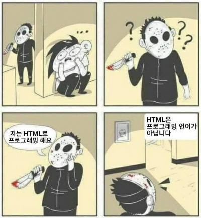

안녕하세요. 웹 개발 학습의 기회를 주셔서 감사합니다.
process1 그대로 따라 적은 것 같은데 똑같이 구현이 안되고 있어요 ㅠㅠ.
대소문자/ 엔터위치/ 완전 다 똑같은데도 제가 적으면 안되고 ㅠ 붙여넣기 하면 되는 건 왜일까요?
그래서 너무 바보같은 질문을 물어볼 수도 있는데 넓은 아량으로 봐주시기 바랍니다.
천리길도 한걸음부터.
stlye 부분이요. 정말 똑같이 따라 썼는데도 계속 적용이 안되요.
이렇게 썼거든요;
#identifier {
color: white;
background-color; #8244FF;
}
어디가 잘못된 걸까요? ㅠ
hello, world!는 어떻게 하신거예요?
저는 따옴표"" 안에 아무말이나 적어 놓으면 바뀌는 줄 알았는데, 아예 창 자체가 안떠요 ㅠ --> 괄호를 중복했던 거죠 ㅎ
인풋테그도 안돼요ㅠㅠ 라디오버튼인가요? 그거 누르면 답 나오는 거요..
재미있는데 ㅠㅠ 근데 제 눈엔 똑같아 보이는데 틀린부분을 찾으려니까 조금 많이 답답하네요 ㅋㅋㅋㅋㅋ
이제 조금 알 거 같아요. 틀린 거 찾아볼게요.
오늘은 여기까지 하겠습니다
여기까지 읽어주셔서 감사합니다
HTML(HyperTex Mark-up Language)이란?
웹 페이지를 표현하기 위한 규약을 의미하며, HTML을 통해 웹페이지의 계층적 구조와 정보를 표현할 수 있습니다.
HTML은 부등호와 이름으로 이루어진 TAG, 그리고 TAG로 감싸진 정보로 구성되어 있습니다. HTML 태그는 종류가 정말 많은데요. 몇가지만 알아보도록 합시다.
가장먼저 div 태그는 division, 웹문서의 구역을 지정하는 태그입니다. 이런 설명은 조금 추상적일지도 모르겠네요. 어쩌면 웹개발에서 가장 많이 사용될 html태그인데요. 사용하다보면 익숙해질거예요.
br태그는 break, 텍스트의 줄바꿈 위치를 지정하는 태그입니다.
p 태그는 paragraph, 즉 문단 정보를 나타내기 위한 태그입니다. 기본적으로 상하단에 여백 (margin)조금 들어가 있네요.
ol태그는 ordered list, 순서가 있는 리스트를 말합니다.
li 태그는 list, ol 태그와 ul 태그의 하위 태그로서 리스트의 실질적인 항목들이 나열됩니다.
ul 태그는 undoreded list, 순서가 없는 리스트를 말합니다.
li태그는 list, ol 태그와 ul태그의 하위 태그로서 리스트의 실질적인 항목들이 나열됩니다.
IMG태그는 image, 웹 컨텐츠에 이미지를 포함시키는 태그입니다. src에 표시하고자 하는 이미지의 url을 입력합니다.

▲ 이 짤을 보신 적이 있나요? 아니요. 처음봐요
html은 정말로 프로그래밍 언어가 아닐까요?
HTML은 마크업 언어입니다.
마크업 언어와 프로그래밍 언어의 차이점은 무엇을 서술하는가에 있습니다.
C언어, Java 등의 프로그래밍 언어는 "어떻게 처리할까?"에 대한 서술을 합니다.
프로그래밍 언어에서는 개발 단계에서 무엇을 표현하게 될지 명확하지 않은 경우가 많습니다.
따라서 프로그래밍 언어의 핵심은 어떤 데이터 입력이 들어와도 유연하게 대처하는 것, 그리고 데이터를 처리하는 방식을 정하는 것입니다.
반면 HTML, XML 등의 마크업 언어는 "무엇을 표현할까?"에 대한 서술을 합니다.
HTML은 브라우저가 무엇을 표현해야 할지 명시할 뿐, 브라우저가 데이터를 어떻게 처리할지 상관하지 않습니다.
따라서 마크업 언어의 핵심은 데이터를 정의하는 것입니다.
쉽게 말하자면, 프로그래밍 언어는 동작을 만들고, 마크업 언어는 모습을 만든다고 생각해도 좋습니다.
웹서비스를 개발하는 과정에서 프로그래밍 언어, 마크업 언어 모두 중요한 요소입니다.
CSS(Cascading Stlye Sheet)란?
html이 실제로 표시되는 방법을 기술하는 언어입니다. html이 웹페이지의 몸체를 담당한다면 css는 옷과 악세서리처럼 꾸미는 역할을 담당합니다.
어쩌면 CSS가 웹퍼블리싱 입문을 어렵게하는 진입장벽처럼 느껴질지도 모릅니다. 하지만 CSS는 생각보다 단순한 문법을 가지고 있으며, 금방 숙련자가 될 수 있을 겁니다.
CSS는 스타일 속성(Attribute)과 속성이 적용될 대상을 식별하는 셀렉터(Selector)로 이루어져있습니다.
셀렉터는 id, class, tag 등을 주로 사용합니다.
속성은 일일히 열거하기에는 너무 다양한 종류가 있으므로, 직접 사용하며 조금씩 익히시면 됩니다.
다음은 기본적인 셀럭터와 속성을 사용한 예제입니다. 간단하게 한 번 따라해 볼까요?
HTML 태그의 id 속성은 "유일성을 갖고 식별될 수 있는 요소(Element)"임을 나타내는 식별자입니다.
따라서 같은 id값을 가진 태그가 웹페이지에 존재해서는 안됩니다. 즉, 중복된 id가 존재하면 안됩니다.
쉽게 말하자면 id 속성은 생물의 DNA에 비유할 수 있습니다. 당신의 DNA는 이 지구상에서 오로지 당신만이 갖고 있죠.
그렇기 때문에 머리카락 속 DNA로 머리카락의 주인이 누구인지 특정해낼 수 있습니다.
마찬가지로 CSS는 HTML 상에서 유일성을 갖고있는 id통해 대상을 특정(Select)하여 스타일을 부여할 수 있습니다.
CSS가 id를 Select할 때, 해시태그(#)을 사용합니다.
HTML 태그의 class 속성은 "공통성을 갖고 식별될 수 있는 요소들(Elements) 중 하나"임을 나타내는 식별자입니다.
따라서 class속성은 같은 class값을 가진 태그가 웹페이지에 다수 존재할 수 있습니다.
또한 같은 class값을 가진 태그들을 한번에 모조리 식별해낼 수 있습니다.
class 속성은 이름이나 직업, 성별, 나이, 국적 등 사람의 속성에 비유할 수 있습니다.
이름만으로는 단 한 사람을 특정할 수는 없습니다. 같은 이름을 가진 사람은 얼마든지 찾을 수 있죠.
대신 같은 이름을 가진 모든 사람을 특정해낼 수는 있습니다. class는 여러 대상의 공통점을 찾아 Select합니다.
CSS는 HTML 상에서 같은 class값을 가진 대상들을 모두 특정(Select)하여 스타일을 부여할 수 있습니다.
CSS가 class를 Select할 때, 점(.)을 사용합니다.
같은 class를 가진 Tag는 같은 CSS 속성이 적용됩니다.
JavaScript란?
자바스크립트는 세상에서 가장 많이 사용되는 프로그래밍 언어 중 하나로 주로 웹페이지의 기능을 구현하는데 사용됩니다.
다른 프로그래밍 언어인 자바와 이름이 비슷하여 어떤 연관이 있을거라고 생각할 수 있지만, 사실 아무런 연관이 없습니다.
자바스크립트와 자바는 공통점보다 차이점이 더 많습니다.
소문에 의하면 자바스크립트의 개발자들이 자바 스크립트가 유명해지길 바라는 마음으로 당시 가장 유명한 프로그래밍 언어였던 Java의 이름을 빌렸다고 합니다.
믿거나 말거나
자바스크립트는 태생부터 웹 프로트엔드 개발을 위해 만들어졌지만, 쉬운접근성, 높은 생상성과 중수한 성능으로 점차 사용범위가 넓어졌습니다.
최근에는 웹 프로트엔드뿐만 아니라, 웹 백엔드에서도 많이 사용되고 있습니다.
자바스크립트만 잘 배워두면 프론트엔드 뿐만 아니라 백엔드에서도 활약할 수 있다는 뜻입니다!
프로그래밍 언어가 익숙하지 않으시겠지만, 천천히 익숙해지기로 합시다.
넵!